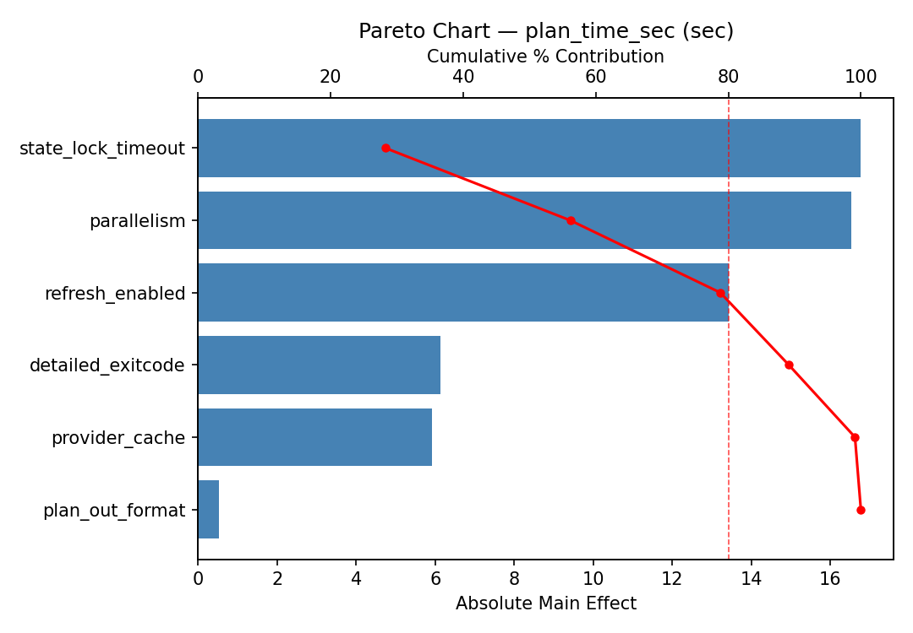
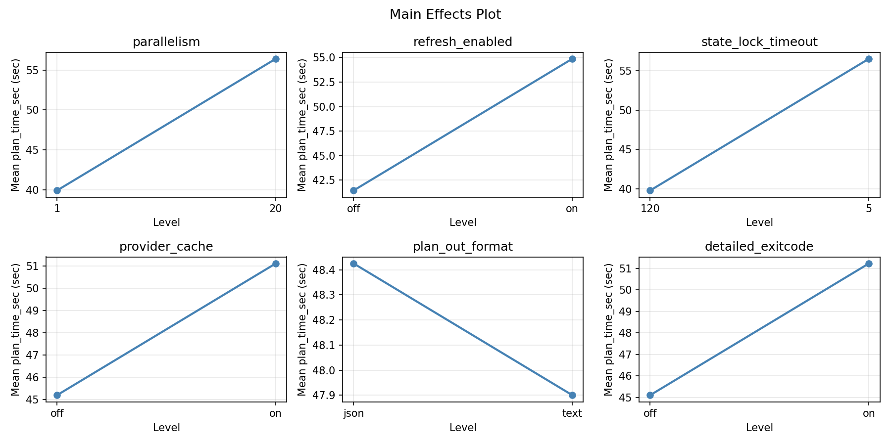
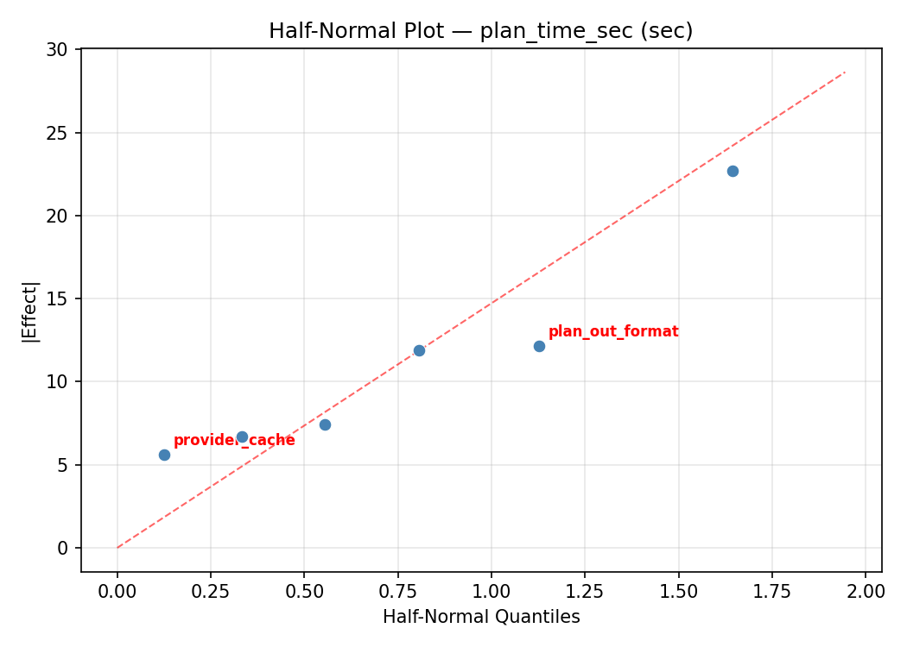
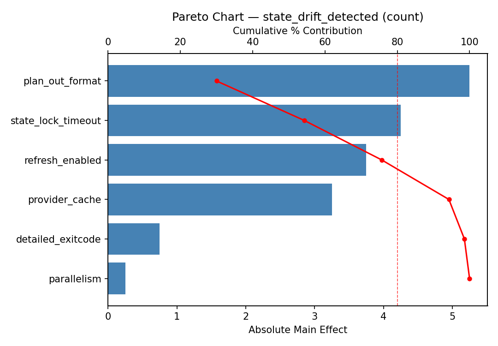
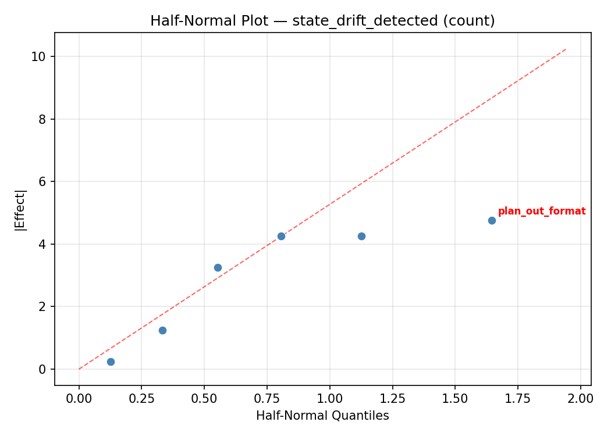
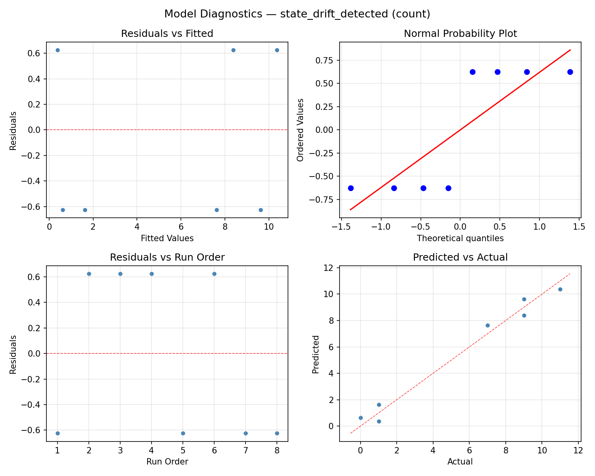

Summary
This experiment investigates terraform plan optimization. Plackett-Burman screening of 6 Terraform parameters for plan time and state drift detection.
The design varies 6 factors: parallelism (threads), ranging from 1 to 20, refresh enabled, ranging from off to on, state lock timeout (sec), ranging from 5 to 120, provider cache, ranging from off to on, plan out format, ranging from text to json, and detailed exitcode, ranging from off to on. The goal is to optimize 2 responses: plan time sec (sec) (minimize) and state drift detected (count) (maximize). Fixed conditions held constant across all runs include backend = s3, provider = aws.
A Plackett-Burman screening design was used to efficiently test 6 factors in only 8 runs. This design assumes interactions are negligible and focuses on identifying the most influential main effects.
Key Findings
For plan time sec, the most influential factors were plan out format (48.1%), state lock timeout (22.1%), refresh enabled (13.1%). The best observed value was 17.4 (at parallelism = 20, refresh enabled = off, state lock timeout = 5).
For state drift detected, the most influential factors were plan out format (71.7%), state lock timeout (10.9%), refresh enabled (6.5%). The best observed value was 11.0 (at parallelism = 20, refresh enabled = off, state lock timeout = 5).
Recommended Next Steps
- Follow up with a response surface design (CCD or Box-Behnken) on the top 3–4 factors to model curvature and find the true optimum.
- Consider whether any fixed factors should be varied in a future study.
- The screening results can guide factor reduction — drop factors contributing less than 5% and re-run with a smaller, more focused design.
Experimental Setup
Factors
| Factor | Low | High | Unit |
|---|
parallelism | 1 | 20 | threads |
refresh_enabled | off | on | |
state_lock_timeout | 5 | 120 | sec |
provider_cache | off | on | |
plan_out_format | text | json | |
detailed_exitcode | off | on | |
Fixed: backend = s3, provider = aws
Responses
| Response | Direction | Unit |
|---|
plan_time_sec | ↓ minimize | sec |
state_drift_detected | ↑ maximize | count |
Configuration
{
"metadata": {
"name": "Terraform Plan Optimization",
"description": "Plackett-Burman screening of 6 Terraform parameters for plan time and state drift detection"
},
"factors": [
{
"name": "parallelism",
"levels": [
"1",
"20"
],
"type": "continuous",
"unit": "threads"
},
{
"name": "refresh_enabled",
"levels": [
"off",
"on"
],
"type": "categorical",
"unit": ""
},
{
"name": "state_lock_timeout",
"levels": [
"5",
"120"
],
"type": "continuous",
"unit": "sec"
},
{
"name": "provider_cache",
"levels": [
"off",
"on"
],
"type": "categorical",
"unit": ""
},
{
"name": "plan_out_format",
"levels": [
"text",
"json"
],
"type": "categorical",
"unit": ""
},
{
"name": "detailed_exitcode",
"levels": [
"off",
"on"
],
"type": "categorical",
"unit": ""
}
],
"fixed_factors": {
"backend": "s3",
"provider": "aws"
},
"responses": [
{
"name": "plan_time_sec",
"optimize": "minimize",
"unit": "sec"
},
{
"name": "state_drift_detected",
"optimize": "maximize",
"unit": "count"
}
],
"settings": {
"operation": "plackett_burman",
"test_script": "use_cases/79_terraform_plan_optimization/sim.sh"
}
}
Experimental Matrix
The Plackett-Burman Design produces 8 runs. Each row is one experiment with specific factor settings.
| Run | parallelism | refresh_enabled | state_lock_timeout | provider_cache | plan_out_format | detailed_exitcode |
|---|
| 1 | 20 | on | 120 | off | text | off |
| 2 | 1 | off | 120 | on | text | off |
| 3 | 1 | on | 5 | on | text | on |
| 4 | 20 | on | 120 | on | json | on |
| 5 | 1 | on | 5 | off | json | off |
| 6 | 20 | off | 5 | on | json | off |
| 7 | 1 | off | 120 | off | json | on |
| 8 | 20 | off | 5 | off | text | on |
Step-by-Step Workflow
1
Preview the design
$ doe info --config use_cases/79_terraform_plan_optimization/config.json
2
Generate the runner script
$ doe generate --config use_cases/79_terraform_plan_optimization/config.json \
--output use_cases/79_terraform_plan_optimization/results/run.sh --seed 42
3
Execute the experiments
$ bash use_cases/79_terraform_plan_optimization/results/run.sh
4
Analyze results
$ doe analyze --config use_cases/79_terraform_plan_optimization/config.json
5
Get optimization recommendations
$ doe optimize --config use_cases/79_terraform_plan_optimization/config.json
6
Multi-objective optimization
With 2 competing responses, use --multi to find the best compromise via Derringer–Suich desirability.
$ doe optimize --config use_cases/79_terraform_plan_optimization/config.json --multi
7
Generate the HTML report
$ doe report --config use_cases/79_terraform_plan_optimization/config.json \
--output use_cases/79_terraform_plan_optimization/results/report.html
Features Exercised
| Feature | Value |
|---|
| Design type | plackett_burman |
| Factor types | continuous (2), categorical (4) |
| Arg style | double-dash |
| Responses | 2 (plan_time_sec ↓, state_drift_detected ↑) |
| Total runs | 8 |
Analysis Results
Generated from actual experiment runs using the DOE Helper Tool.
Response: plan_time_sec
Top factors: plan_out_format (48.1%), state_lock_timeout (22.1%), refresh_enabled (13.1%).
ANOVA
| Source | DF | SS | MS | F | p-value |
|---|
| Source | DF | SS | MS | F | p-value |
| parallelism | 1 | 0.1013 | 0.1013 | 0.001 | 0.9710 |
| refresh_enabled | 1 | 49.5013 | 49.5013 | 0.694 | 0.4322 |
| state_lock_timeout | 1 | 141.9612 | 141.9612 | 1.991 | 0.2011 |
| provider_cache | 1 | 47.5312 | 47.5312 | 0.667 | 0.4411 |
| plan_out_format | 1 | 671.6113 | 671.6113 | 9.420 | 0.0181 |
| detailed_exitcode | 1 | 3.2512 | 3.2512 | 0.046 | 0.8370 |
| parallelism*refresh_enabled | 1 | 141.9613 | 141.9613 | 1.991 | 0.2011 |
| parallelism*state_lock_timeout | 1 | 49.5013 | 49.5013 | 0.694 | 0.4322 |
| parallelism*provider_cache | 1 | 671.6112 | 671.6112 | 9.420 | 0.0181 |
| parallelism*plan_out_format | 1 | 47.5312 | 47.5312 | 0.667 | 0.4411 |
| parallelism*detailed_exitcode | 1 | 1097.4612 | 1097.4612 | 15.393 | 0.0057 |
| refresh_enabled*state_lock_timeout | 1 | 0.1013 | 0.1013 | 0.001 | 0.9710 |
| refresh_enabled*provider_cache | 1 | 3.2513 | 3.2513 | 0.046 | 0.8370 |
| refresh_enabled*plan_out_format | 1 | 1097.4612 | 1097.4612 | 15.393 | 0.0057 |
| refresh_enabled*detailed_exitcode | 1 | 47.5313 | 47.5313 | 0.667 | 0.4411 |
| state_lock_timeout*provider_cache | 1 | 1097.4612 | 1097.4612 | 15.393 | 0.0057 |
| state_lock_timeout*plan_out_format | 1 | 3.2513 | 3.2513 | 0.046 | 0.8370 |
| state_lock_timeout*detailed_exitcode | 1 | 671.6113 | 671.6113 | 9.420 | 0.0181 |
| provider_cache*plan_out_format | 1 | 0.1012 | 0.1012 | 0.001 | 0.9710 |
| provider_cache*detailed_exitcode | 1 | 49.5013 | 49.5013 | 0.694 | 0.4322 |
| plan_out_format*detailed_exitcode | 1 | 141.9612 | 141.9612 | 1.991 | 0.2011 |
| Error | (Lenth | PSE) | 7 | 499.0781 | 71.2969 |
| Total | 7 | 2011.4187 | 287.3455 | | |
Pareto Chart

Main Effects Plot

Normal Probability Plot of Effects

Half-Normal Plot of Effects

Model Diagnostics

Response: state_drift_detected
Top factors: plan_out_format (71.7%), state_lock_timeout (10.9%), refresh_enabled (6.5%).
ANOVA
| Source | DF | SS | MS | F | p-value |
|---|
| Source | DF | SS | MS | F | p-value |
| parallelism | 1 | 0.1250 | 0.1250 | 0.074 | 0.7933 |
| refresh_enabled | 1 | 1.1250 | 1.1250 | 0.667 | 0.4411 |
| state_lock_timeout | 1 | 3.1250 | 3.1250 | 1.852 | 0.2158 |
| provider_cache | 1 | 0.1250 | 0.1250 | 0.074 | 0.7933 |
| plan_out_format | 1 | 136.1250 | 136.1250 | 80.667 | 0.0000 |
| detailed_exitcode | 1 | 1.1250 | 1.1250 | 0.667 | 0.4411 |
| parallelism*refresh_enabled | 1 | 3.1250 | 3.1250 | 1.852 | 0.2158 |
| parallelism*state_lock_timeout | 1 | 1.1250 | 1.1250 | 0.667 | 0.4411 |
| parallelism*provider_cache | 1 | 136.1250 | 136.1250 | 80.667 | 0.0000 |
| parallelism*plan_out_format | 1 | 0.1250 | 0.1250 | 0.074 | 0.7933 |
| parallelism*detailed_exitcode | 1 | 3.1250 | 3.1250 | 1.852 | 0.2158 |
| refresh_enabled*state_lock_timeout | 1 | 0.1250 | 0.1250 | 0.074 | 0.7933 |
| refresh_enabled*provider_cache | 1 | 1.1250 | 1.1250 | 0.667 | 0.4411 |
| refresh_enabled*plan_out_format | 1 | 3.1250 | 3.1250 | 1.852 | 0.2158 |
| refresh_enabled*detailed_exitcode | 1 | 0.1250 | 0.1250 | 0.074 | 0.7933 |
| state_lock_timeout*provider_cache | 1 | 3.1250 | 3.1250 | 1.852 | 0.2158 |
| state_lock_timeout*plan_out_format | 1 | 1.1250 | 1.1250 | 0.667 | 0.4411 |
| state_lock_timeout*detailed_exitcode | 1 | 136.1250 | 136.1250 | 80.667 | 0.0000 |
| provider_cache*plan_out_format | 1 | 0.1250 | 0.1250 | 0.074 | 0.7933 |
| provider_cache*detailed_exitcode | 1 | 1.1250 | 1.1250 | 0.667 | 0.4411 |
| plan_out_format*detailed_exitcode | 1 | 3.1250 | 3.1250 | 1.852 | 0.2158 |
| Error | (Lenth | PSE) | 7 | 11.8125 | 1.6875 |
| Total | 7 | 144.8750 | 20.6964 | | |
Pareto Chart

Main Effects Plot

Normal Probability Plot of Effects

Half-Normal Plot of Effects

Model Diagnostics

Response Surface Plots
3D surfaces fitted with quadratic RSM. Red dots are observed data points.
plan time sec parallelism vs state lock timeout

state drift detected parallelism vs state lock timeout

Multi-Objective Optimization
When responses compete, Derringer–Suich desirability finds the best compromise.
Each response is scaled to a 0–1 desirability, then combined via a weighted geometric mean.
Overall Desirability
D = 0.7412
Per-Response Desirability
| Response | Weight | Desirability | Predicted | Dir |
|---|
plan_time_sec |
1.0 |
|
42.20 0.5072 42.20 sec |
↓ |
state_drift_detected |
1.5 |
|
11.00 0.9545 11.00 count |
↑ |
Recommended Settings
| Factor | Value |
|---|
parallelism | 1 threads |
refresh_enabled | on |
state_lock_timeout | 5 sec |
provider_cache | on |
plan_out_format | text |
detailed_exitcode | on |
Source: from observed run #4
Trade-off Summary
Sacrifice = how much worse than single-objective best.
| Response | Predicted | Best Observed | Sacrifice |
|---|
state_drift_detected | 11.00 | 11.00 | +0.00 |
Top 3 Runs by Desirability
| Run | D | Factor Settings |
|---|
| #1 | 0.5320 | parallelism=1, refresh_enabled=off, state_lock_timeout=120, provider_cache=off, plan_out_format=json, detailed_exitcode=on |
| #3 | 0.3320 | parallelism=20, refresh_enabled=off, state_lock_timeout=5, provider_cache=on, plan_out_format=json, detailed_exitcode=off |
Model Quality
| Response | R² | Type |
|---|
state_drift_detected | 0.6885 | linear |
Full Multi-Objective Output
============================================================
MULTI-OBJECTIVE OPTIMIZATION
Method: Derringer-Suich Desirability Function
============================================================
Overall desirability: D = 0.7412
Response Weight Desirability Predicted Direction
---------------------------------------------------------------------
plan_time_sec 1.0 0.5072 42.20 sec ↓
state_drift_detected 1.5 0.9545 11.00 count ↑
Recommended settings:
parallelism = 1 threads
refresh_enabled = on
state_lock_timeout = 5 sec
provider_cache = on
plan_out_format = text
detailed_exitcode = on
(from observed run #4)
Trade-off summary:
plan_time_sec: 42.20 (best observed: 17.40, sacrifice: +24.80)
state_drift_detected: 11.00 (best observed: 11.00, sacrifice: +0.00)
Model quality:
plan_time_sec: R² = 0.8526 (linear)
state_drift_detected: R² = 0.6885 (linear)
Top 3 observed runs by overall desirability:
1. Run #4 (D=0.7412): parallelism=1, refresh_enabled=on, state_lock_timeout=5, provider_cache=on, plan_out_format=text, detailed_exitcode=on
2. Run #1 (D=0.5320): parallelism=1, refresh_enabled=off, state_lock_timeout=120, provider_cache=off, plan_out_format=json, detailed_exitcode=on
3. Run #3 (D=0.3320): parallelism=20, refresh_enabled=off, state_lock_timeout=5, provider_cache=on, plan_out_format=json, detailed_exitcode=off
Full Analysis Output
=== Main Effects: plan_time_sec ===
Factor Effect Std Error % Contribution
--------------------------------------------------------------
plan_out_format -18.3250 5.9932 48.1%
state_lock_timeout -8.4250 5.9932 22.1%
refresh_enabled 4.9750 5.9932 13.1%
provider_cache 4.8750 5.9932 12.8%
detailed_exitcode -1.2750 5.9932 3.3%
parallelism -0.2250 5.9932 0.6%
=== ANOVA Table: plan_time_sec ===
Source DF SS MS F p-value
-----------------------------------------------------------------------------
parallelism 1 0.1013 0.1013 0.001 0.9710
refresh_enabled 1 49.5013 49.5013 0.694 0.4322
state_lock_timeout 1 141.9612 141.9612 1.991 0.2011
provider_cache 1 47.5312 47.5312 0.667 0.4411
plan_out_format 1 671.6113 671.6113 9.420 0.0181
detailed_exitcode 1 3.2512 3.2512 0.046 0.8370
parallelism*refresh_enabled 1 141.9613 141.9613 1.991 0.2011
parallelism*state_lock_timeout 1 49.5013 49.5013 0.694 0.4322
parallelism*provider_cache 1 671.6112 671.6112 9.420 0.0181
parallelism*plan_out_format 1 47.5312 47.5312 0.667 0.4411
parallelism*detailed_exitcode 1 1097.4612 1097.4612 15.393 0.0057
refresh_enabled*state_lock_timeout 1 0.1013 0.1013 0.001 0.9710
refresh_enabled*provider_cache 1 3.2513 3.2513 0.046 0.8370
refresh_enabled*plan_out_format 1 1097.4612 1097.4612 15.393 0.0057
refresh_enabled*detailed_exitcode 1 47.5313 47.5313 0.667 0.4411
state_lock_timeout*provider_cache 1 1097.4612 1097.4612 15.393 0.0057
state_lock_timeout*plan_out_format 1 3.2513 3.2513 0.046 0.8370
state_lock_timeout*detailed_exitcode 1 671.6113 671.6113 9.420 0.0181
provider_cache*plan_out_format 1 0.1012 0.1012 0.001 0.9710
provider_cache*detailed_exitcode 1 49.5013 49.5013 0.694 0.4322
plan_out_format*detailed_exitcode 1 141.9612 141.9612 1.991 0.2011
Error (Lenth PSE) 7 499.0781 71.2969
Total 7 2011.4187 287.3455
Note: Error estimated using Lenth's pseudo-standard-error (unreplicated design)
=== Interaction Effects: plan_time_sec ===
Factor A Factor B Interaction % Contribution
------------------------------------------------------------------------
parallelism detailed_exitcode -23.4250 16.0%
refresh_enabled plan_out_format 23.4250 16.0%
state_lock_timeout provider_cache 23.4250 16.0%
parallelism provider_cache 18.3250 12.5%
state_lock_timeout detailed_exitcode -18.3250 12.5%
parallelism refresh_enabled 8.4250 5.8%
plan_out_format detailed_exitcode -8.4250 5.8%
parallelism state_lock_timeout -4.9750 3.4%
provider_cache detailed_exitcode 4.9750 3.4%
parallelism plan_out_format -4.8750 3.3%
refresh_enabled detailed_exitcode 4.8750 3.3%
refresh_enabled provider_cache -1.2750 0.9%
state_lock_timeout plan_out_format -1.2750 0.9%
refresh_enabled state_lock_timeout 0.2250 0.2%
provider_cache plan_out_format 0.2250 0.2%
=== Summary Statistics: plan_time_sec ===
parallelism:
Level N Mean Std Min Max
------------------------------------------------------------
1 4 48.2750 15.0933 32.2000 67.8000
20 4 48.0500 21.0388 17.4000 65.3000
refresh_enabled:
Level N Mean Std Min Max
------------------------------------------------------------
off 4 45.6750 24.8711 17.4000 67.8000
on 4 50.6500 5.9501 42.2000 55.5000
state_lock_timeout:
Level N Mean Std Min Max
------------------------------------------------------------
120 4 52.3750 14.8028 32.2000 67.8000
5 4 43.9500 20.1005 17.4000 65.3000
provider_cache:
Level N Mean Std Min Max
------------------------------------------------------------
off 4 45.7250 21.5838 17.4000 67.8000
on 4 50.6000 13.7392 32.2000 65.3000
plan_out_format:
Level N Mean Std Min Max
------------------------------------------------------------
json 4 57.3250 11.7352 42.2000 67.8000
text 4 39.0000 17.5752 17.4000 55.5000
detailed_exitcode:
Level N Mean Std Min Max
------------------------------------------------------------
off 4 48.8000 14.5632 32.2000 65.3000
on 4 47.5250 21.3846 17.4000 67.8000
=== Main Effects: state_drift_detected ===
Factor Effect Std Error % Contribution
--------------------------------------------------------------
plan_out_format -8.2500 1.6084 71.7%
state_lock_timeout 1.2500 1.6084 10.9%
refresh_enabled 0.7500 1.6084 6.5%
detailed_exitcode -0.7500 1.6084 6.5%
parallelism -0.2500 1.6084 2.2%
provider_cache 0.2500 1.6084 2.2%
=== ANOVA Table: state_drift_detected ===
Source DF SS MS F p-value
-----------------------------------------------------------------------------
parallelism 1 0.1250 0.1250 0.074 0.7933
refresh_enabled 1 1.1250 1.1250 0.667 0.4411
state_lock_timeout 1 3.1250 3.1250 1.852 0.2158
provider_cache 1 0.1250 0.1250 0.074 0.7933
plan_out_format 1 136.1250 136.1250 80.667 0.0000
detailed_exitcode 1 1.1250 1.1250 0.667 0.4411
parallelism*refresh_enabled 1 3.1250 3.1250 1.852 0.2158
parallelism*state_lock_timeout 1 1.1250 1.1250 0.667 0.4411
parallelism*provider_cache 1 136.1250 136.1250 80.667 0.0000
parallelism*plan_out_format 1 0.1250 0.1250 0.074 0.7933
parallelism*detailed_exitcode 1 3.1250 3.1250 1.852 0.2158
refresh_enabled*state_lock_timeout 1 0.1250 0.1250 0.074 0.7933
refresh_enabled*provider_cache 1 1.1250 1.1250 0.667 0.4411
refresh_enabled*plan_out_format 1 3.1250 3.1250 1.852 0.2158
refresh_enabled*detailed_exitcode 1 0.1250 0.1250 0.074 0.7933
state_lock_timeout*provider_cache 1 3.1250 3.1250 1.852 0.2158
state_lock_timeout*plan_out_format 1 1.1250 1.1250 0.667 0.4411
state_lock_timeout*detailed_exitcode 1 136.1250 136.1250 80.667 0.0000
provider_cache*plan_out_format 1 0.1250 0.1250 0.074 0.7933
provider_cache*detailed_exitcode 1 1.1250 1.1250 0.667 0.4411
plan_out_format*detailed_exitcode 1 3.1250 3.1250 1.852 0.2158
Error (Lenth PSE) 7 11.8125 1.6875
Total 7 144.8750 20.6964
Note: Error estimated using Lenth's pseudo-standard-error (unreplicated design)
=== Interaction Effects: state_drift_detected ===
Factor A Factor B Interaction % Contribution
------------------------------------------------------------------------
parallelism provider_cache 8.2500 30.8%
state_lock_timeout detailed_exitcode -8.2500 30.8%
parallelism refresh_enabled -1.2500 4.7%
parallelism detailed_exitcode 1.2500 4.7%
refresh_enabled plan_out_format -1.2500 4.7%
state_lock_timeout provider_cache -1.2500 4.7%
plan_out_format detailed_exitcode 1.2500 4.7%
parallelism state_lock_timeout -0.7500 2.8%
refresh_enabled provider_cache -0.7500 2.8%
state_lock_timeout plan_out_format -0.7500 2.8%
provider_cache detailed_exitcode 0.7500 2.8%
parallelism plan_out_format -0.2500 0.9%
refresh_enabled state_lock_timeout 0.2500 0.9%
refresh_enabled detailed_exitcode 0.2500 0.9%
provider_cache plan_out_format 0.2500 0.9%
=== Summary Statistics: state_drift_detected ===
parallelism:
Level N Mean Std Min Max
------------------------------------------------------------
1 4 5.0000 4.8990 1.0000 11.0000
20 4 4.7500 4.9244 0.0000 9.0000
refresh_enabled:
Level N Mean Std Min Max
------------------------------------------------------------
off 4 4.5000 4.1231 1.0000 9.0000
on 4 5.2500 5.5603 0.0000 11.0000
state_lock_timeout:
Level N Mean Std Min Max
------------------------------------------------------------
120 4 4.2500 4.4253 0.0000 9.0000
5 4 5.5000 5.2599 1.0000 11.0000
provider_cache:
Level N Mean Std Min Max
------------------------------------------------------------
off 4 4.7500 5.1881 0.0000 11.0000
on 4 5.0000 4.6188 1.0000 9.0000
plan_out_format:
Level N Mean Std Min Max
------------------------------------------------------------
json 4 9.0000 1.6330 7.0000 11.0000
text 4 0.7500 0.5000 0.0000 1.0000
detailed_exitcode:
Level N Mean Std Min Max
------------------------------------------------------------
off 4 5.2500 5.5603 0.0000 11.0000
on 4 4.5000 4.1231 1.0000 9.0000
Optimization Recommendations
=== Optimization: plan_time_sec ===
Direction: minimize
Best observed run: #6
parallelism = 20
refresh_enabled = off
state_lock_timeout = 5
provider_cache = on
plan_out_format = json
detailed_exitcode = off
Value: 17.4
RSM Model (linear, R² = 0.8598, Adj R² = 0.0185):
Coefficients:
intercept +48.1625
parallelism -7.0375
refresh_enabled +11.3375
state_lock_timeout -0.0125
provider_cache -0.8875
plan_out_format +6.0875
detailed_exitcode -0.5125
Predicted optimum (from linear model, at observed points):
parallelism = 1
refresh_enabled = on
state_lock_timeout = 5
provider_cache = on
plan_out_format = text
detailed_exitcode = on
Predicted value: 71.2375
Surface optimum (via L-BFGS-B, linear model):
parallelism = 20
refresh_enabled = off
state_lock_timeout = 120
provider_cache = on
plan_out_format = text
detailed_exitcode = on
Predicted value: 22.2875
Model quality: Good fit — general trends are captured, some noise remains.
Factor importance:
1. refresh_enabled (effect: 22.7, contribution: 43.8%)
2. parallelism (effect: -14.1, contribution: 27.2%)
3. plan_out_format (effect: 12.2, contribution: 23.5%)
4. provider_cache (effect: -1.8, contribution: 3.4%)
5. detailed_exitcode (effect: -1.0, contribution: 2.0%)
6. state_lock_timeout (effect: 0.0, contribution: 0.0%)
=== Optimization: state_drift_detected ===
Direction: maximize
Best observed run: #4
parallelism = 20
refresh_enabled = off
state_lock_timeout = 5
provider_cache = off
plan_out_format = text
detailed_exitcode = on
Value: 11.0
RSM Model (linear, R² = 0.9991, Adj R² = 0.9940):
Coefficients:
intercept +4.8750
parallelism +0.6250
refresh_enabled +1.6250
state_lock_timeout -2.1250
provider_cache -2.1250
plan_out_format +2.3750
detailed_exitcode +0.6250
Predicted optimum (from linear model, at observed points):
parallelism = 20
refresh_enabled = off
state_lock_timeout = 5
provider_cache = off
plan_out_format = text
detailed_exitcode = on
Predicted value: 11.1250
Surface optimum (via L-BFGS-B, linear model):
parallelism = 20
refresh_enabled = on
state_lock_timeout = 5
provider_cache = off
plan_out_format = json
detailed_exitcode = on
Predicted value: 14.3750
Model quality: Excellent fit — surface predictions are reliable.
Factor importance:
1. plan_out_format (effect: 4.8, contribution: 25.0%)
2. state_lock_timeout (effect: 4.2, contribution: 22.4%)
3. provider_cache (effect: -4.2, contribution: 22.4%)
4. refresh_enabled (effect: 3.2, contribution: 17.1%)
5. parallelism (effect: 1.2, contribution: 6.6%)
6. detailed_exitcode (effect: 1.2, contribution: 6.6%)